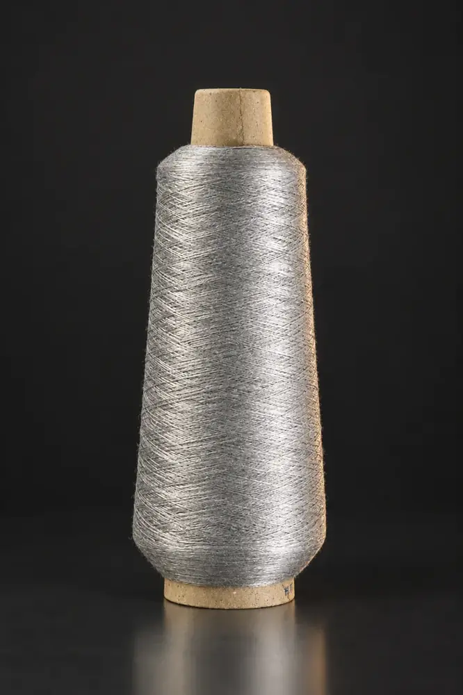
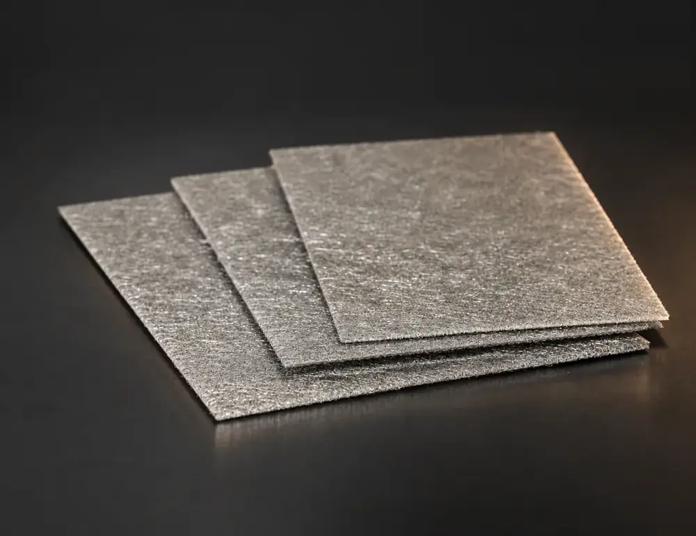
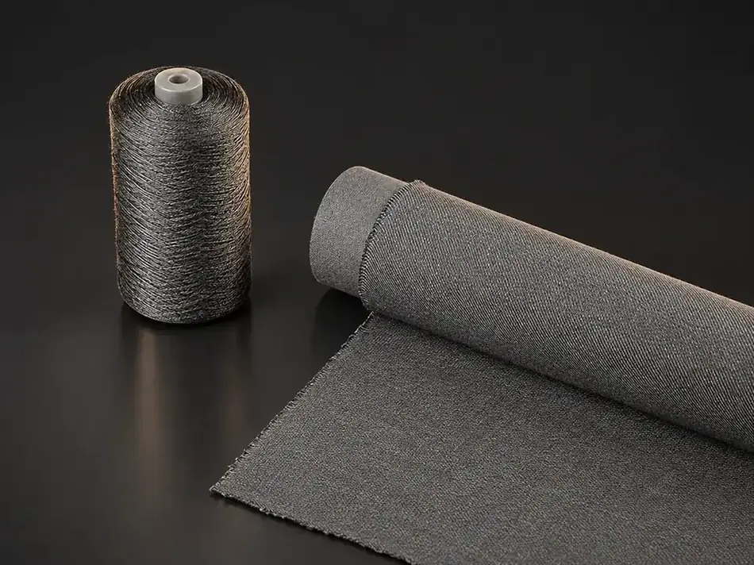
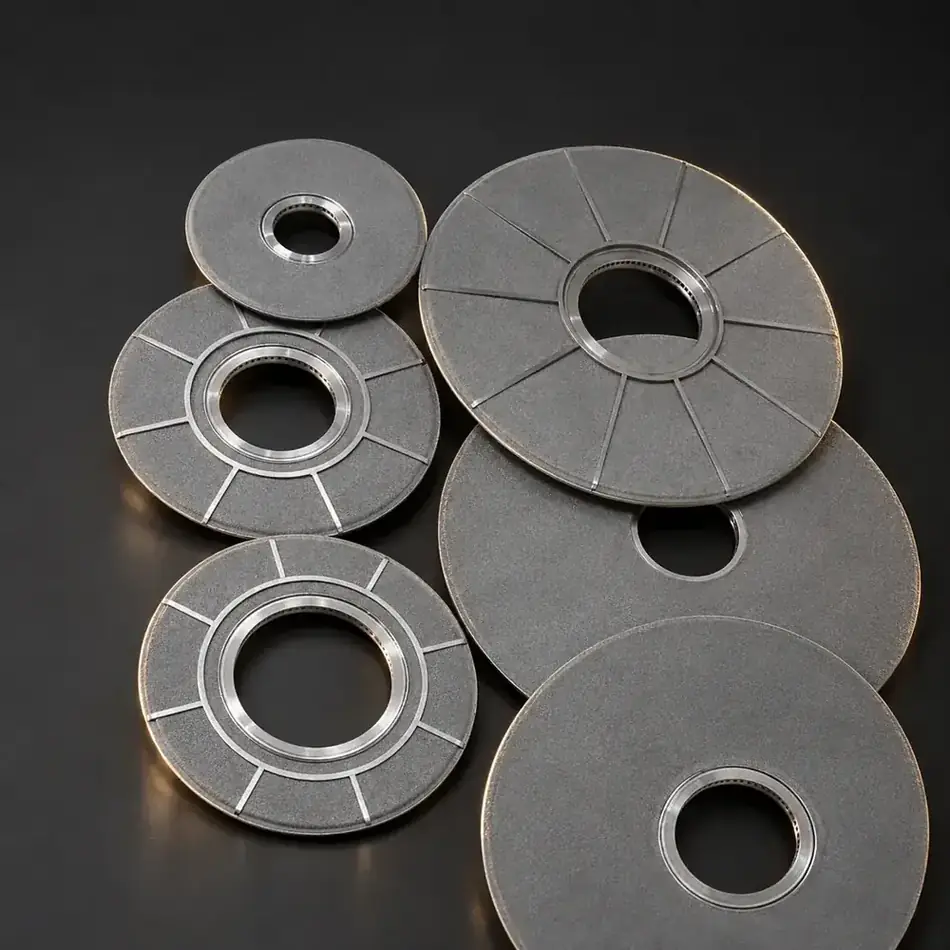
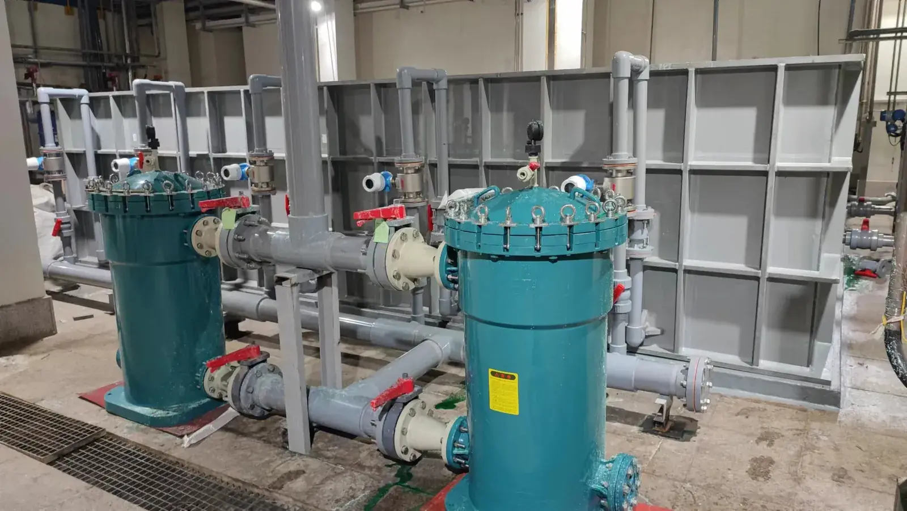
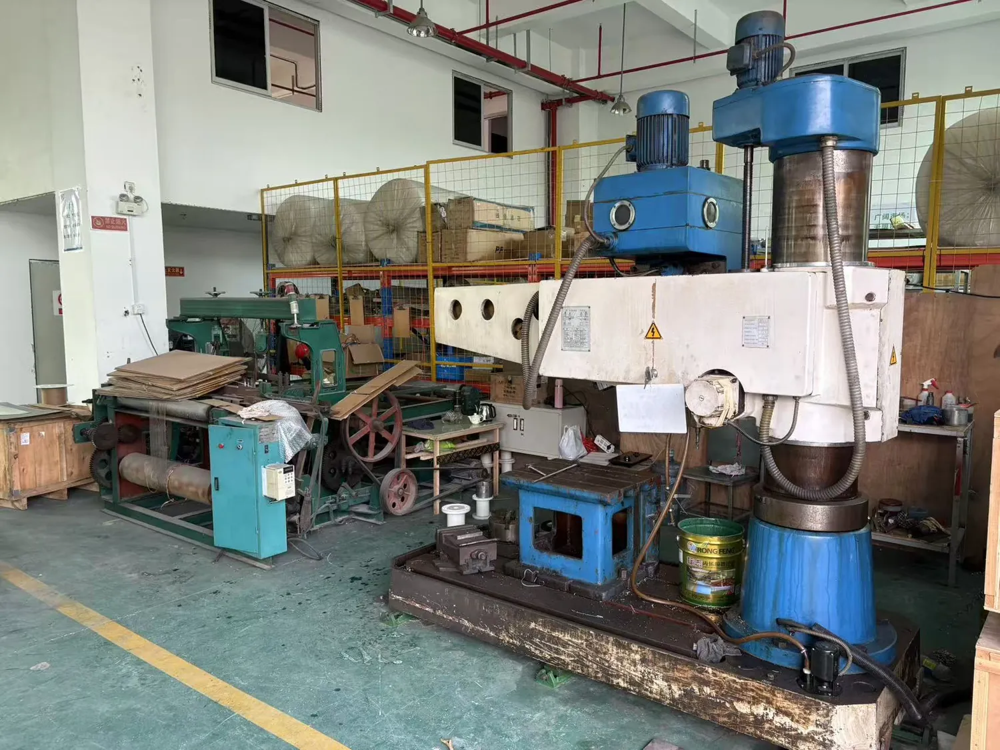

湿法冶金600 m³/h
某新能源材料企业 · 镍钴萃取液预除油
- 工况
- 硫酸钴 / 硫酸镍萃取料液含非溶解油，威胁后端树脂与膜系统
- 方案
- 槽式收油系统，单套处理量 600 m³/h，占地约为每小时处理量的 1/3–2/3
- 效果
- 纯物理除油无药剂引入，分离油份回收复用；行业内单套处理量最大
依托强纶新材料创新研究院，掌握超细不锈钢纤维制备与超级不锈钢制备技术，打通从纤维、烧结成型到过滤装备的完整技术链。
进入科研创新纤维越细，比表面积越大、过滤精度越高；制成的烧结毡更均匀，纱线与织物也更柔软。这是强纶全部产品的起点。
直径低至 2μm，稳定量产
对应：纤维纱线 · 烧结毡多层梯度孔结构
对应：烧结毡 · 滤芯滤芯、叶片滤盘到成套系统
对应：化纤 · 石化 · 薄膜导电纱、发热丝
对应：智能穿戴 · 座椅加热发明 11 · 实用新型 44 · 外观 2
6流体净化 · 氢能源 · 金属橡胶等
5+1国家标准 5 项 · 行业标准 1 项
金属纤维、纱线与织物、烧结毡、过滤元件到过滤设备与技术服务，全部自主完成——品质可追溯，交期更可控。
微米级不锈钢纤维，直径低至 2μm，是一切产品的起点。
导电纱、编织带与功能织物，导电、耐高温、柔软可织造。
多层梯度孔结构高温烧结，兼顾精度与纳污量。
烧结滤芯、叶片滤盘，耐高温、可清洗再生。
成套过滤系统设计、制造与现场技术服务。
每条产品线均可按工况参数定制，并提供样品测试。点击进入产品线，查看完整型号与参数。

01
02
03
04
05* 具体过滤精度、孔隙率、透气度、耐温等实测参数，以各参数对照表及出厂检验报告为准。
六个行业，各有痛点。悬停或点击查看强纶的应对方案与推荐产品。
痛点高温、高粘度工况下，传统滤材易堵塞、寿命短。
推荐叶片滤盘 · 烧结滤芯 · 烧结毡
痛点高温成型与输送中，玻璃表面容易划伤、留痕。
推荐耐高温不锈钢纤维编织带 · 金属纤维织物
痛点静电积聚与电磁干扰，影响生产安全与设备稳定。
推荐316L 不锈钢纤维纱 · 不锈钢导电线
痛点严苛环境下，对耐温、耐腐蚀与批次一致性要求极高。
推荐金属纤维烧结毡 · 过滤元器件
痛点座椅加热需要柔性、均匀发热；玻璃成型需耐高温不留痕。
推荐导电发热线 · 耐高温编织带
痛点导电与发热材料既要可靠，又要柔软、耐弯折。
推荐导电发热线 · 耐高温发热丝 · 导电纱
按"行业 · 工况 · 方案 · 效果"四段式呈现，客户名称按保密约定脱敏。完整业绩清单见净化设备页。
强纶超细不锈钢纤维直径可低至 2μm，并已实现稳定量产，可用于高精度烧结毡、导电纱线与功能织物。
在高温、高粘度或腐蚀性工况下，金属纤维烧结毡耐温、耐腐蚀且可清洗再生；常温、低要求工况可考虑滤布。具体以介质、温度与精度要求为准，可通过"按工况选型"获取建议。
取决于纤维品种、纺丝规格与熔体洁净度要求。建议提供产品规格与现用滤材情况，由强纶工程师结合叶片滤盘与烧结滤芯给出精度方案。
可以。金属纤维烧结滤材耐高温、耐腐蚀，可反复清洗再生，在苛刻工况下使用寿命更长。
支持。可根据过滤精度、工况温度、介质、尺寸与接口等参数定制设计，并提供样品测试。
技术专栏回答工程师的真实问题，也是 AI 平台引用强纶的主要入口。
不便到场时，用 VR 全景漫游车间、实验室与成品区，设备布局与生产环境一目了然。
进入全景漫游全景链接由甲方提供，后台填入后此处自动嵌入；链接到期可随时更换或取消本板块。

VR 全景后台上传后自动转码多档清晰度，电脑与手机按网络自适应播放。
填写介质、温度与精度，技术工程师将为您提供选型建议、样品与报价。留言实时推送至企业微信与邮箱。